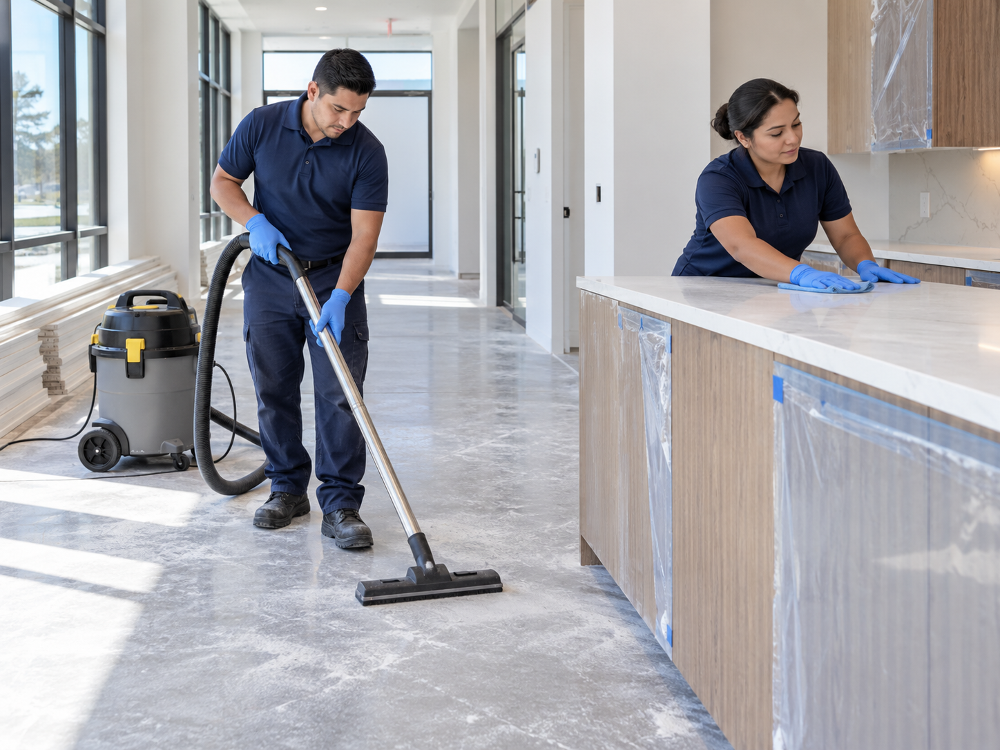
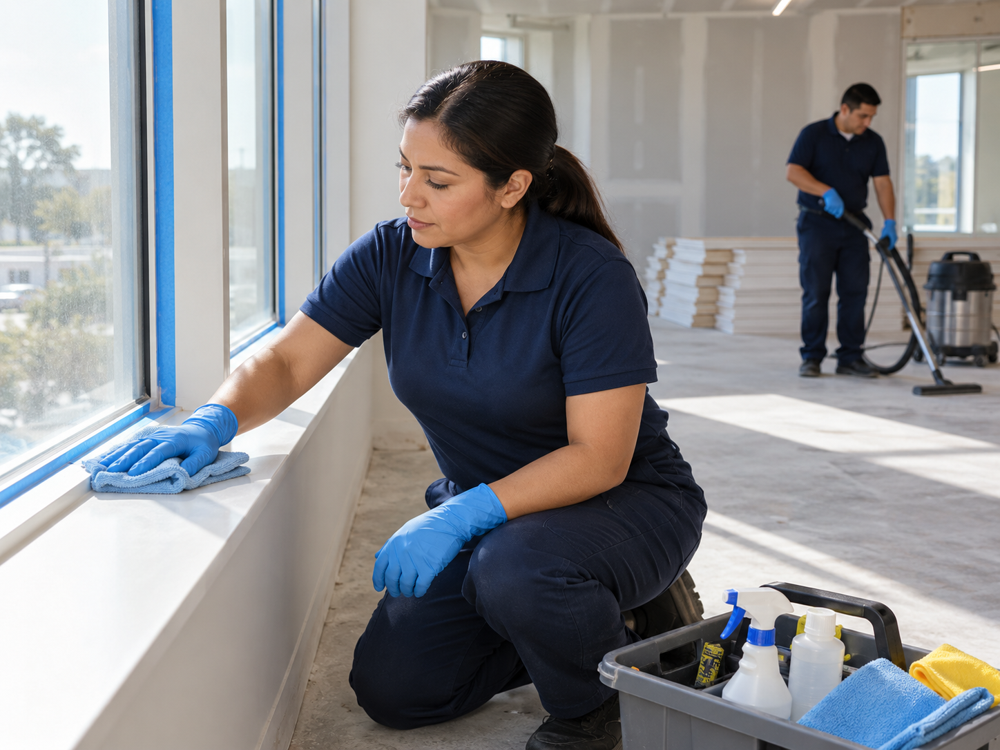
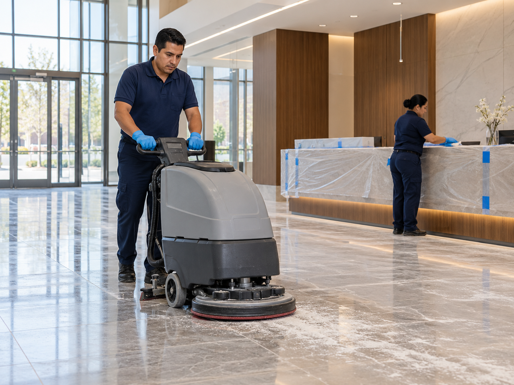

Construction Cleaning at Different Stages
Construction cleaning can support active renovation work, final detail cleaning, and preparation before occupancy. Paradigm Janitorial Services cleans project areas in Los Angeles County and San Bernardino County according to the stage of work and site access.


Construction Areas We Clean
Different zones need different cleanup as the project moves from active work to final turnover.
Cleaning Before Turnover
The final cleaning can be planned around what work is finished, what residue remains, and when the space needs to be ready.
Cleaning During Renovation
Ongoing cleanup can help control debris and keep work areas more organized as a renovation moves forward.
Final Construction Cleaning
After the work is complete, detailed cleaning can focus on dust, floors, glass, fixtures, surfaces, cabinets, restrooms, and remaining debris.
Move In Readiness
The final clean can be scheduled around inspections, furniture delivery, tenant move in, grand openings, or employee return dates.
Commercial and Residential Projects
Construction cleaning can support office buildouts, apartment renovations, retail spaces, residential renovations, and other projects where the final presentation matters.